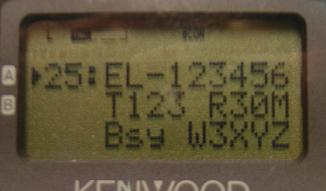
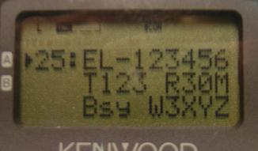

This page addresses all issues related to the APRS Network.
Executive Summary: If your local APRS channel is not silent say 70% of the time, then it is unreliable for realistic commmunications from most users due to collisions. This page tells you how most areas are limiting hops to 2 hops or less. Some busy areas even limit digipeater response to 1 hop where population density is high and there is an IGate in range of all digipeaters. See how to handle high density areas.
 MORE MOBILE INFO: Since 2004, the New-N Paradigm has included the distribution
of local info objects from digipeaters. In 2009, this was increased to allow up to
3 such beacons from each digi to provide local-direct INFO beacons of local traveler
info to mobile user radio displays as that shown to the right and below.
Earlier, only the BText was available for these
beacons, but now we recommend using two more of the LTEXTS in the digis, for two more
important assets. Typically these are the local recommended travelers repeater and
possibly OPEN EchoLink or IRLP nodes.
See the localinfo web page.
MORE MOBILE INFO: Since 2004, the New-N Paradigm has included the distribution
of local info objects from digipeaters. In 2009, this was increased to allow up to
3 such beacons from each digi to provide local-direct INFO beacons of local traveler
info to mobile user radio displays as that shown to the right and below.
Earlier, only the BText was available for these
beacons, but now we recommend using two more of the LTEXTS in the digis, for two more
important assets. Typically these are the local recommended travelers repeater and
possibly OPEN EchoLink or IRLP nodes.
See the localinfo web page.
The APRS network is ideal for serving local relevant information to mobile operators, travelers and visitors. This includes not just the frequencies of the repeater, IRLP or EchoLink nodes but also these frequency objects should contain local NET times or meetings in progress, etc as shown here.
 


Notice how the IRLP and ECHOLINK nodes identify not only their node numbers and callsigns, but also their Tone and Range... By pressing the OK button to see the POSIT screen, you can see that the Echolink node is 17.1 miles to the Southwest. [these photos were taken before we noticed that the Freqeuency on the second line was missing!] . Please see the formats in the Echo-Irlp-Win.txt file.
FIX YOUR ANTENNA FIRST: If you are seeing good "S" meter signals on APRS but not decoding every packet, then you are hearing collisions from two or more local digi's. The APRS network is a contention based system and so the best base-station antenna is often not a high omni. It is one that is placed such that it hears all local digis but with at least a 10 dB different signal between them. This assures that one will always win in a collision, and you wont miss any packets. read about APRS antennas.
Add a DIGI to your club's 2M Repeater Antenna: N3PX reports it is trivial to add a digipeater to an existing 147 or high-146 repeater to share existing antennas and hardline using an extra duplexer. See how.
The New-N Paradigm was an initiative to vastly improve the APRS network beginning in about 2004. . Each of these improvements made a small contribution, but the overall impact when all of them were implemented and, in turn, passed along in educating the user, resulted in factors of 2 to 5 improvement in overall APRS local reliability! If your area has not done this, then get on the air and motivate someone.
We must get all digipeaters to these new settings! If you know of an obsolete digi, contact the owner and assist in getting it updated. The following links will help you set up each kind of digi to the New-N Paradigm.
KPC-3+ Vers 8.3 to 9.1
KPC-3 Vers 8.2
UIDIGI-ROMs.
DIGI_NED
X-DIGI settings.
Tracker2 by Argent Data Systems
PacComm TNCs.
Fill-in WIDE1-1 digis
Setting up a UIview station as a Fill-in WIDE1-1 digi
RECENT UPDATED CONCEPTS FOR IMPROVING APRS OPERATIONS:
In addition to the New-N Paradigm, and mostly as a result of the much higher efficiency of the streamlined New-N network, there have been several recent initiatives that have added a rich layer of additional operational utility to the local RF network.
{kind=link}
Fixing the APRS Network with the New-N Paradigm:
Tragedy of the Commons: . APRS suffers the classic fate of all limited resources
(as well documented since the 1830's
See Tragedy).
Whenever there is a balance between individual interests and
the common good, human nature guarantees the overloading and ultimate
demise of the common resource. In this case, APRS throughput. . This is easy to
understand since the benefit of adding one more packet to the network always immediately
benefits the SENDER, but the negative "cost" is spread over everyone else, and NOT the sender. .
There is no natural solution, other than the establishment of "Golden Rules" to
live by for all concerned.
The APRS Golden Rule - The New-N Paradigm:
By 2002, the APRS network in the USA was an inefficient conglomeration of legacy
systems that were still evolving.
see 2002 summary.
. The New-N Paradigm began in Nov 2004 to streamline APRS for much
better efficiency and much simpler settings for users. . The result has been exciting improvements
everywhere it has been implemented. .
The APRS network evolved over 13 years and by Nov 2004, it was time to abandon
the obsolete settings causing
tremendous RELAY-DUPE problems in the USA. . The
fix was easy, all we needed were a few changed
remote-sysop parameters at the digipeaters without even a trip to the site.
UPDATE 2009: For what its worth, APRS is still growing with FINDU reporting
60k user hits a day and a 30% growth per year and APRS.FI reporting 16k user hits
and 200% growth. OpenAPRS is seeing comparable growth.
Use WIDEn-N where N is appropriate for your area.
We called this initiative
the New-N Paradigm. . The changes simply boil
down to one universal path recommendation for all users. . Use WIDEn-N everywhere
and N should be 2 in most major APRS areas of the country
shown below and 3 only in flat rural desolate areas. .
That's about all there is to it. . But read on...

See also Europe
See also Australia/New Zealand
{kind=link}
{kind=link}
SUCCESSFUL APRS:
The success of your local APRS is not how many stations
you see on your maps, nor how far away, but how reliably
your mobile or handheld or portable station can communicate with others
in the local area. . There is a big difference and they are mutually
exclusive. . This fundamental principal should drive
everything we do with APRS in our local areas.
RELIABLE APRS:
Said another way, the more stations you see above about
60 to 100 or so in typical areas, the more packets you don't see due to collisions and
the less reliable your network is for local real-time APRS use.
FIXING THE 144.39 NETWORK:
The New-N Paradigm not only changes some DIGIpeater parameters but also stresses
USER EDUCATION that a local 1200 baud APRS network capacity is greatly reduced
by each additional digipeater used. . The area covered goes up, but the capacity is
reduced by half. . Typical areas where people use 2 hops with four or more
digis, can only support about 60 to 100 or so users in its RF domain. . Conversly, if no
digipeaters were used and eveyone could hear each other direct, APRS could theoreticlly
support about 360 users on a simplex channel direct (with time slotting). .
But because of many people using too many hops and bad paths that cause too many dupes
for surrounding areas, some areas of the country are totally saturated
with 10 times the amount of attempted
packets with only the strongest and most abusive getting through. . Net reliability is
miserable for those locals whose packets cannot even get into the local digi due to
out of area congestion. . This is self defeating. There are many things wrong:
FIX #1: Phase out RELAY and WIDE Paths (also eliminate TRACE, TRACEn-N):
The single biggest improvement in the USA was simply getting users
to stop using the obsolete RELAY and WIDE paths. (see why). .
The obsolete RELAY and WIDE paths generated multiple dupes in the KPC-3 and PacComm and some other
implementations because there is no dupe elimination for dupes heard from other digis. .
These obsolete paths generated 3 to 5 times more load on the system than the comparable
WIDEn-N path which has perfect dupe elimination algorithms.
The fix was easy. Use WIDE1-1 in place of RELAY.
(see The RELAY fix!) and WIDEn-N in place of WIDE.
FIX #2: Make WIDEn-N Traceable:
The original WIDEn-N system was not traceable, making it impossible to do any network assessment
or management. . The New-N Paradigm made WIDEn-N traceable!. .
(By eliminating TRACEn-N, Sysops can now move WIDEn-N support from the UIFLOOD parameter
to the UITRACE parameter.)
FIX #3: Use WIDEn-N everywhere. The New n-N Paradigm Solution:
WIDEn-N is the most efficient APRS path, but it is vulnerable to out-of area QRM from
user settings of large values of N. . Fortunately, under the New n-N Paradigm,
existing digis now trap large-N abuse and greatly simplify user recommendations
to simply one WIDEn-N path. . The New n-N Paradigm simplifies the APRS network to
a few distinct digipeater types:
Fix #4: THE NEW STATE SSn-N PATH FOR STATE/SECTIONS or REGIONS:
The New n-N Paradigm simplified to a traceable WIDEn-N as the most efficient APRS
path. . This works well for small values of N in high density areas. . But sometimes
fringe stations in the corner of a region, may need to participate in a region-wide net
and need more hops, but do not want to QRM adjacent 2 or 3 neighboring regions.
For this reason, the New-N Paradigm also includes the SSn-N system. . SSn-N solves
this problem for each Region, State, Country or ARRL section. In the USA we call them
States or ARRL Sections, in Europe, the regions are based on a combination of
two iso-standards. ISO 3166-1 country code und ISO 3166-2 subdivision code.
With WIDEn-N support moved to the UITRACE parameter, this left the UIFLOOD process
available to support SSn-N, where larger values of N's can be tolerated and can get to the
far reaches of a region, but not QRM other regions or users in other directions. .
For example, a user in central Maryland can hit everyone in the region with WIDE3-3. .
But those users in the panhandle and south, need maybe 6 hops to participate in the region wide
net. . Using the SSn-N path of MD6-6 will hit all the way to the ends of the region (about 10 main digis)
but there will be no QRM to surrounding regions. Conversly, if he had used WIDE6-6 instead,
then those packers would QRM almost a DOZEN SURROUNDING regionS and over 140 digis
in all directions! . Actually, the size
of SSn-N doesnt really matter since it will hit every digi once
in a limited area, and no more.
See the example:
UPDATE: The above left photo was typical of what we used to see on RF in the Baltimore
area prior 2004 and the New-N paradigm. . To see how this mess has been reduced under 2 years
of progress under the New-N Paradigm, see the
Jan 2007 map.
PATH TRACING USING THE SSn-N PATH: SSn-N (using the old UIFLOOD
paramter at the DIGI sites), would not normally be traceable. . But if users use the path of
WIDE1-1,SSn-N, then the path does become traceable at least with regard to the first
and last digi used. . If DIGI Sysops enable SSn-N support using the command: UIFLOOD SS,30,ID,
then these paths will be always traced with the FIRST and LAST digi in the path,
no matter how many hops are taken. . This
is a tremendous benefit for network management. .
This packet arrives as DIGI1,WIDE1,DIGIn,SSn* showing the first and last digi used.
UHF across SSn-N Region Lines: if you live on a border town and want to always be
able to see the other region's SSn packets, simply put up a cross band digipeater that
hears the 144.39 SSn packets from the other region, but digipeates those to a local UHF
frequency. . To see the other region's SSn packets, just tune to that UHF channel without any QRM
to your local 144.39 operations.
Fix #5, Labeling the New n-N Paradigm digis:
The New-N paradigm also includes educating users. . THe biggest step is to be sure that every
digipeater announces its capabilities to users. . Most importantly
are the new S, L, 1 and P overlays for the new settings on the digipeaters. . The "S"
fully support WIDEn-N and SSn-N for State or section routing. . The "L"
digis are the same but are limited and do not support SSn routing,
and the "P" digis are old Paccomm Trace digis that have been configured to
support WIDEn-N. . One-hop digis in extremely high density areas
(like in LA) and fill-in WIDE1-1-only digis will show a "1"
to indicate they are an enforced 1-hop digis.
SECONDLY, as part of user education, ALL digipeaters should show their New-N
settings in the position comment text of the DIGI's beacon. .
See the Details on Overlays and the
proper form for the Position Comment Text.
Fix #6, Proportional Pathing for DIGI beacons!
One of the biggest loads on the network prior to this New-N Paradigm was simply the
flooding in all directions at all distances of the individual DIGI beacons. Many
digis were sending out their beacon to 4 and 5 hops in all directions every 10 to
30 minutes. There is no need for this spam. . So part of the New-N paradigm was
to come up with the Proportional Pathing algorithm that kept
the information update rate at 10 minutes in the immediate direct range of the
digi so that passing travelers would be informed, but then the rate was much less
for more hops to cut overall load on the network and out-of-area spam.
See Proportional Pathing.
This Prportional Pathing was easy to implement in the New-N Paradigm in all KPC3+ digis by simply
loading the four LTexts with the identical beacon, but then setting up four
different timings and four different paths. The result is a local DIRECT packet once
every 10 minutes, but then a 1 Hop path once every 30 minutes and a 2 hop to surrounding areas
only once every hour.
Proportional Pathing for all Trackers and Mobiles:
The original APRS design uses a Decaying Algorithm to send new data more frequently than
old data, and make each later copy less and less often if the packet is unchanging.
Most follow-on APRSclones, and mobiles, however, ignored this fundamental principal and transmit
far too much duplicate unchanging info. . We need mobiles to use direct and
local 1 hop paths more often than 2 or 3-hop paths. .
This is called Proportional Pathing. . It means that mobiles will send at a ONE
minute rate to maintain good local situational awareness,
but every other packet is sent LOCAL-DIRECT. . Every 2 minutes
it goes via WIDE1-1. . Every 4 minutes it goes via WIDE1-1,WIDE2-1. And
if Proportional-Pathing is set to 3, then once every 8 minutes it will go via
3 hops using WIDE1-1,WIDE2-2. . This technique cuts the load on the network
by a HUGE factor since high-rate mobiles with long paths was one of our biggest
problems. . Also, this solves the problem of adjustments between areas.
A setting of Proportional Pathing = 3 should be OK just about anywhere, with only
a 3 hop packet once every 8 minutes, but still minimal latency every 1 minute in
the immediatel area.
. Fortunately, Kenwood included Proportional Pathing in the new D710 radio.
See Proportional Pathing.
TEMPn-N DIGIS for Emergencies and Field Day:
APRS consists of over 1000 permanent digis across the USA. But there is a vast
un-tapped resource of thousands of more digis that can be used in emergencies
if needed. . These are the D-700 mobiles that can act as digis. . Normally
we want all these mobile digis OFF to avoid added QRM on the network. But we
need a way to use them if needed. . The Solution is to set these radios' UITRACE parameter
to TEMPn-N permanently. . Because they are not
WIDEn-N they normally will not digipeat anything. . But anyone, at any time,
needing a path out of an area without digi coverage, can attempt a TEMPn-N
packet to use any nearby D700 as an automatic digi.
See the TEMPn-N page.
TEMPn-N FOR FIELD DAY: Another advantage to the TEMPn-N system is the
current ARRL Field Day rules which prohibit APRS unless a temporary digi is used
for FD. . Instead of trying to re-configure all the digis for FD, we can now
just use TEMPn-N because this temporary path could always be there!
Finally a PICTURE of APRS User Density! :
Look again at the map of user density below. Imagine concentric rings around the HIGH density
areas. . To limit to only 2 hops in the RED areas, then digis in those areas must not
support anything above WIDE2-2. . The next tier of digis out from these areas need to trap
3-3 and above packets. The next tier of digis out, has to trap 4-4 and above, etc. .
And almost everywhere we need to trap 5-5 through 7-7. . Any area that needs big N's should
solve the problem with more IGates, not longer paths.
Remember, for each N that you drop, you improve the network efficiency by
a FACTOR of THREE or more. So just getting trackers to cut from 5-5
to 3-3 will reduce their QRM by a factor of 9!. . Cutting from 3-3 to 2-2 will
improve efficiency by THREE or more everywhere!
Click to see statistics on above map.
The remainder of this page is all the background that supports the recommendations above
APRS FUNDAMENTALS: APRS can ONLY work at the local level on RF. It is only a
1200 baud channel shared by your nearest neighbors. . It can only work if
you and your neighbors understand how it works and its limitations and you are
not QRM'ed to death from packets from out-of-area. . The following table
shows the BASIC ASSUMPTIONS about the goals of an APRS network:
THE ALOHA CONCEPT:
The 1200 baud 144.39 channel can only support an average user load of about 60 to 100 or so
APRS stations or objects in an RF domain based on the typical transmission rates and number
of digipeaters and number of hops. .
See the breakdown and analysis. . This is because
any greater load than 100% channel capacity guarantees lost packets due to collisions. .
The size of your area that holds the number of users capable of generating 100% channel
capacity we call your ALOHA circle.
You are responsbile to make sure that your packets get to your
surrounding ALOHA network but no further so you do not add QRM to other networks.
ALOHA Circle concept.
FIX #7: The ALOHA Circle:
Every APRS software should calculate and display the ALOHA circle for its user. . It should
be overlayed on every map so that it is never out of mind. . But even without
the ALOHA calculator built-in, users can still get a good estimate from FINDU.COM. .
Simply EDIT-COPY this URL into your browser with YOUR APRS station callsign on the end:
http://map.findu.com/WB4APR-9 <= your call here
That FINDU page sorts your 60 nearest APRS stations by range and so the range
to the last person on that list is the radius (or range) of your ALOHA circle. . This
list of stations is your APRS ALOHA Neighborhood. It also includes which digipeaters you
may need to hit, to be able to communicate with them. . More importantly, your packets
should not go beyond this circle routinely. .
In Southern California, your ALOHA circle may only
be 15 miles and you may only need ONE hop to hit everyone. . In WYOMING, you may need
more hops....
The ALOHA circle is automatic now in all copies of APRSdos (APRSmax after
APRS871.zip). . See Map plot above. . There is also an add-on for UIview, and
the next release of WinAPRS should have it too. .
It computes and maintains a plot of the yellow ALOHA range circle on
all map zooms. Around Baltimore it is about 45 to 55 miles depending on the number
of mobiles at any time. . Also displayed below is the MAP-PLOT-HOPS command that shows
a plot of the number of hops it took for surrounding digis to reach me.
MAPS-PLOTS-USERS shows the same plot of user hops. .
Notice that 2 hops will get one EVERYWHERE within this Aloha Circle even though there
are 13 digis in that area!
Note, that these PHG circles are the new half-size APRS standard which more closely
represent a MOBILE's range. . The actual RF range of these digis
to fixed stations and other digis is TWICE that shown above.)
Fix #8: Alt-Input Channel on 144.99:
Currently what your digi hears on its input is 98% from out of area, thus,
you only get in when you overpower the distant QRM. . But this does not work for
low-power devices. . The simplest local way to improve local reliability in the
presence of QRM at the digi is to move local users to their own input channel
such as 144.99 (+600 from .39) if available in your area
which simply then cross digipeats back to 144.39 where
everyone listens. This simple SYSOP solution can drastically improve local channel
reliability! See how to
Double local reliability with an ALT-channel input on your digi.
Fix #9: TURN HID OFF IN THE DIGIs:
HID OFF: . First turn HID OFF. . This ID packet is not an APRS format and
uses the same path as the UNPROTO and goes out every 10 minutes if on. .
This, plus a bad UNPROTO path of 3 hops generates almost 100 packets per
hour per digi in the area. . But turning HID off and using the 4 LT PATHS and
4 BLT timings can reduce this kind of QRM by a factor of 4! .
See digi-rates.txt. . The APRSdos heard display below
shows the large number of dupes from digipeaters that have HID on, and that also are
using the poor dupe-generating WIDE paths and not using the 4 BLT/LTP/LT settings for best digi efficiency.
Fix #10: Properly set the Digi Beacon Rate:
Please set the DIGI beacon rate as shown in
digi-rates.txt file. . This results
in a local packet every 10 minutes, but only one every 30 minutes at one
hop and only one every hour at 2 hops. . This cuts DIGI beacon traffic load
by half! . The HEARD display above shows how failure to use the smart beaconing
method on the digis and using the old WIDE paths really generate
lots of dupes.
Fix #11: Update the PacComm "T" digis to support WIDE2-2 and change them to "P" digis:
Please revise these PacComm Settings .
The original PacComm TNC's back in 1996 gave us the first callsign-substitution
capability in APRS. . We called these digipeaters "TRACE" digis and use an overlay
T to designate them. But they do not support the much more efficient
WIDEn-N type of routing and were holding back the ultimate improvement of our
network in in some areas. . In all these
areas, paths using RELAY and WIDE were still being used. . These cause from 3 to 5 times as
many duplicate packets. . To prove this to yourself, capture an hour of packets from your TNC and
then run the program
download APRSTEST.EXE to analyze the results.
Below is the result for the Baltimore area:
Notice how 45% of all packets come from only 25% of the users using W,W,W paths. . Also notice
how simply switching to WIDE2-2 is more than 5 times more efficient than W,W,W and twice
as efficient as W,W! . But this can be fixed,
by encouraging the new WIDE2-2 universal recommendation. . And the old PacComm digis can support
this New n-N Paradigm and become a P digi
by simply supporting WIDE1-1,WIDE2-2,WIDE2-1 and WIDE3-3 as ALIASES.
(see the settings link above for more options).
Fix #12: Update the very-high-hear-too-much digis:
To make APRS grow, cell size must get smaller to keep within the ALOHA limits in
any one RF area. . High digis can be good if the number of hops of all users is
restricted. . But, in generally flat land, more users may require more, but lower digis,
and restricting the number of hops. .
If you can reduce what the tall-hear-too-much-mountain-top sites hear to only
DIRECT packets (and no surrounding QRM) they can support over 100 users...
See the very-tall digi problem in the LA basin in Southern
California. . There are several options for the tall-super-site digis depending
on your area:
WE MUST KEEP N SMALL:
See how WIDE3-3 can hit most of VA, MD, DE and SE-PA in the above map. . These days,
high density areas areas can only support WIDE2-2 and no more. . See the chart:
We must cut the number of hops and simplify settings so that the APRS network works
everywhere for everyone using consistent settings.
We can fix it OVERNIGHT: by simply adjusting three of the remote sysop parameters
for the ALIAS list and the two n-N distribution mechanisms in most digis. .
UIFLOOD floods without being able to trace the path and UITRACE
traces but with more overhead. . Choosing the optimum uses of these besides the
original WIDEn-N and TRACEn-N and using the ALIAS list as a trap for large N
paths, can drastically reduce out of area QRM overnight. . Here is what we can accomplish:
See the Maryland/VA New n-N plan and map.
USER EDUCATION:
The most important value of the New-N Paradigm is the great simplification of
paths making universal APRS User education practical. . All the legacy paths before
were just making it too dificult for the users. . Now it is simply WIDEn-N with small N.
Done. The New n-N Paradigm
tools are very powerful, but it still boils down to fundamentals. .
Use only what will get you to your nearest 60 to 100 users. . Anything else is QRM.
BENEFITS of the new n-N paradigm:
WHAT THE USER SEES:
OFF-LOADING WIDEn-N TRAFFIC:
For areas that still want to see
distant traffic
into other SSn-N's or larger DX N's of traffic from all over, it is easy to
terminate
adjacent OTHERn-N traffic from outside your area into UHF where it enters your area. . Then,
anyone who is interested, or IGates or other processes can tune in the OTHERn-N traffic
as needed as shown in the sketch below.
All it takes is a typical TNC set to digipeat the OTHERn-N traffic it hears on 144.39
and transmit it to a local UHF freq.
Done.
The 2004 image below shows how 50% of the digis in the mid-atlantic area were NOT WIDEn-N
and so in general, we were suffering from the severe DUPE problem of using the old
RELAY and WIDE paths. . But this is rapidly changing as eveyrone endorses the
New n-N Paradigm.
Collisions and Lost Packets: There is no way to know the reliablity of your network
from general statistics of packets heard, because you cannot tell what you DON'T HEAR! .
A channel that is 800% overloaded and only passing 1 out of every 8 possible packets can
sound identical to one that is 50% loaded and passing 100% of every packet for everyone...
SO, one the only way to really measure actual performance by using "probes". .
Probes are simply known packets at known rates from "intended user stations" in the
"intended areas of coverage" that tell you exactly the performance of your network. . See
PROBES or PHGR.
To implement this, we simply add one byte
to the existing PHG construct. We call the result PHGR.
THE ID/NOID ISSUE: Another thing that was quite broken in the
old APRS network was the inconsistent setting of the ID/NOID parameter. .
This determined how a WIDEn-N packet appeard on receipt and whether or not
the INITIAL or LAST digi was identified. . Just seeing a digi listed it was
imnpossible for anyone but the digi owner to know which it meant because only
he knew the setting of the ID/NOID parameter. . For years we tried to get it
set to NOID so that the FIRST digi could be identified by using the path of
WIDE,WIDEn-N. . But this causes dupes. . Now, we solved this problem by moving WIDEn-N support
to the TRACE parameter so all WIDEn-N paths are now traced.
Further UIFLOOD is now used for SSn-N and we can enforce tracing bby setting ID to ON
so that the 1st and last digi are indentified if users use the path of WIDE1-1, SSn-N. .
This packet arrives as DIGI1,DIGIn,SSn*.
For a historical persepctive you may read
about the ID/NOID problem.
LINEAR LINKn-N BACKBONES:
During emergencies and getting traffic out of an affected area, it is best to
use a long series linear chain of digipeaters (usually on a separate frequency).
This is one way to get above the receommended N=2 limitation. For example,
the Annual Appalachian Trail Golden Packet
event attempts to send APRS messages over 2000 miles of the AT by using LINK7-7
paths. . This system uses Traceable LINKn-N paths for messages (UITRACE) and
the shorter non-traceable HOP7-7 paths for positions (UIFLOOD parameter).
Although big-N 7 hop paths are used, they are only in one direction and so at most
only 7 packets are generated instead of the nearly 200 that would result from
an omnidirectional WIDE7-7 packet.
INTERSTATE ##LNKn-N PATHS: Using this similar technique, it is possible
to establish long chains of digipeater along some long distance interstates
using the path name of ##LNKn-N. . This greatly eliminates dupes since a
packet can only go one direction. A 90LNK7-7 packet for interstate 90 only
generates 7 copies of the packet along Interstate 90 compared to almost 200
packets for WIDE7-7. . Thus it reduces QRM by an order of magnitude and the
NETWORK limits the damage instead of being dependent on user education. .
See A graphic example of possible LINKn-N systems through Virginia
and a suggested (obsolete) list of all ##LNKn-N chains.
THE APRS-INTERNET SYSTEM: The original (and present) purpose of APRS is to
be a tactical real-time local digital communications system for reliable, quick
exchange and display of important local information. . Although in 1997, Steve Dimse and Sproul
Brothers began the APRS-IS (Internet System) to glue it all together, nothing in
the APRS-IS detracts from that local definition. .
The Internet simply allows distant stations to observe such local activity,
yet provides connectivity to the global reach of APRS messages. .
Thus, to some people, just making the nearest IGate is sufficient for the majority
of their conectivity needs.
So, how far is any station from the nearest Igate?
The image below shows
the number of hops to an Igate for all of California. . Notice that MOST stations are
only ONE HOP or less from an IGate and almost everyone is within 2 hops!
ALOHA NETWORKS: APRS is a random network based on random transmissions of
data among many users trying to share a channel. . This technique was well studied back
in the 60's and is called an ALOHA network for where it was first developed at the
University of Hawaii. It is the basis for most data networks which evolved into
what we know of as the ARPANET and now the INTERNET and other protocols. . Click for the
original definition of an ALOHA system.
Basically the channel must be quiet most of the time, so that a sender will have a
good chance of a successful transmission. . You can add more and more users, but eventually
you get to the point that adding more users only adds more collisions, and the net
reliability goes down drastically. . If you add up the statistical load of about
60 or so APRS users, their packets equal a 100% busy channel. . Any more and the network suffers.
So, how many users are there in range of your digi?
If your digi hears too much then its reliability for local users is poor!
CHECK YOUR DIGI:
Here is a list of all digis in the world heard by FINDU in Dec 2004. . It is
surprising how some of these digis appear to hear so many stations direct.
If your digi and its neighbors actually does hear over 150 DIRECT, then the
best way to prevent channel saturation is to implement the New-N Paradigm
and have surrounding digis limit the number of hops and by all means to
eliminate the obsolete RELAY and WIDE paths. .
Not limiting the QRM by these techniques is a good indication
that reliability of low power and distant users will suffer badly. . The RANGE shown
here is computed from your PHG values. . If they are unrealistic, consider reducing
the PHG numbers to better match reality. . Remember to use Height-Above-Average-Terrain
and not just the "altitude" of the digi:
Of course, these numbers are inflated due to a number of non-RF stations that also
get counted but it is representative. . Best to look at exactly what is in the
footprint by going to map.findu.com and looking at the nearby
stations to see what exactly is there. .
If there are that many RF users in range, then the APRS community in that area must
add limits to n-N traffic to reduce the hearing range of these big digipeaters
to better serve their local users. . Here are a number of things you can do:
APRS Channel Throughput:
The above screen capture of the APRSdos program called SIMULATE.BAS shows how this
program can be used to simulate the throughput on any kind of ALOHA channel. . In this
example it shows how 85% of the 40 stations all with a brand-new packet of information
will be successful in getting at least one successful digipeat of that new information
in the first 8 minutes. . This example caused about 280 packets to be generated
using the APRSdos decaying algorithm to decay the retry-time after each attempt so
that new data is transmitted more often, and old data decays down to much lower rates
to preserve channel capacity.
Many popular APRS systems, unfortunately, use a constant transmission rate of X packets
every Y period of time which results in a DOUBLING of QRM (over 480 packets) being generated
for only a 2% improvement in throughput over the same 8 minutes.
UHF BACKBONE SOLUTION!:
See the all-new SUPER-LAN CONECPT
that has evolved into its own WEB page due to recent discussions and development
on the APRSSIG. . The rest of this page was incorporated into this new page...
In areas where High-Site digis are hearing far too many packets, is to convert those
digis to output only on a dedicated UHF frequency. . This instantly doubles throughput
by going duplex, but even more importantly it can gain up to an order of magnitude
improvement through how it listens to 144.39. .
See the original BACKBONE plan. . But remember
that we think it is now easier to start not with a BACKBONE, but with a centrally
located 9600 BAUD SUPER-LAN CONECPT since
it only takes one person to do it, instead of a lot of multi-site coordination..
The following sketch suggests how such a high digi can be converted to UHF in one
major metropolitan area and can still communicate to another adjacent Metro area,
but without burdening 144.39 and without any new logic other than the same kind of
processing already standard in any IGate:
The above backbone assumes that a single central site can hear all the smaller-lower
digis in a mstropolitan area. . But this concept can be extended to numerous such
high site digis as in the following diagram. . Here, three high-site digis can all
hear over a dozen lower-local digis, yet they can still share all packets on the
backbone using a single 9600 baud data stream:
You are visitor number: The Naval Academy is a registered user of APRS
and WinAPRS. . The purpose of this web page is to show several applications
currently in use at this site and should not be considered as an advertisement
or an endorsement of any commercial product.
See also Europe
See also Australia/New Zealand


........ Users can still listen to it on UHF or an IGate on UHF will still get everything
click to see 3 digis.
click to see 2 digis.
See the
map of Trace-only digis (mostly eastern states.)

The bottom line is what does the user see. . And this is the crux of the whole idea.
In the past, we could not train the users because there was no single set of instructions that
worked everywhere. . Every area was disintigrating APRS with local hacks that make it
impossible to tell users what to use. . So my NEW n-N paradigm has as its
whole obejctive to get APRS back to a single set of user parameters that will work
everwyhere locally, yet still provide all the power of APRS for other applications:

In this context, LOWER is BETTER (just like CELL phones have grown, by going to smaller
and smaller cells!).
Since 1 Oct 2003..
{kind=link}
{kind=link}
{kind=link}
{kind=link}
{kind=link}